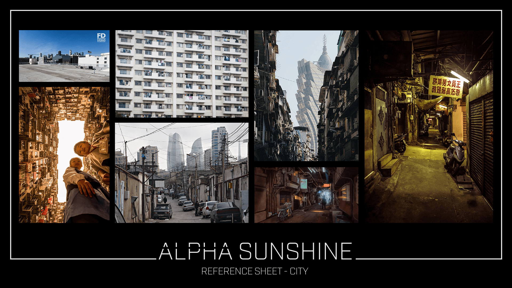
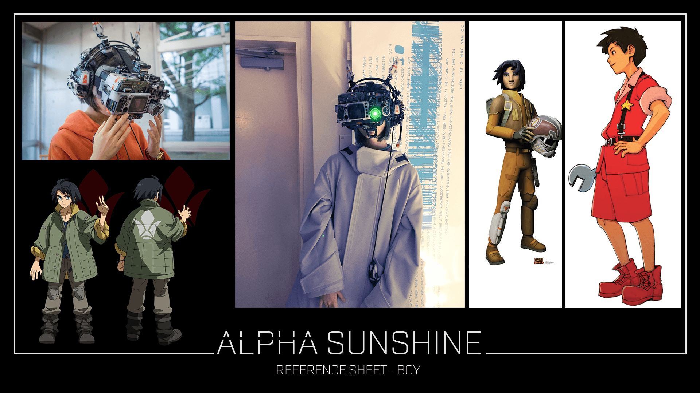
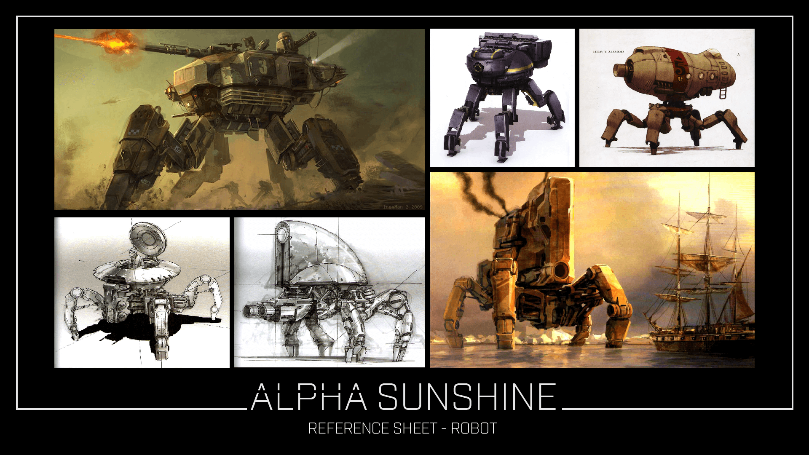
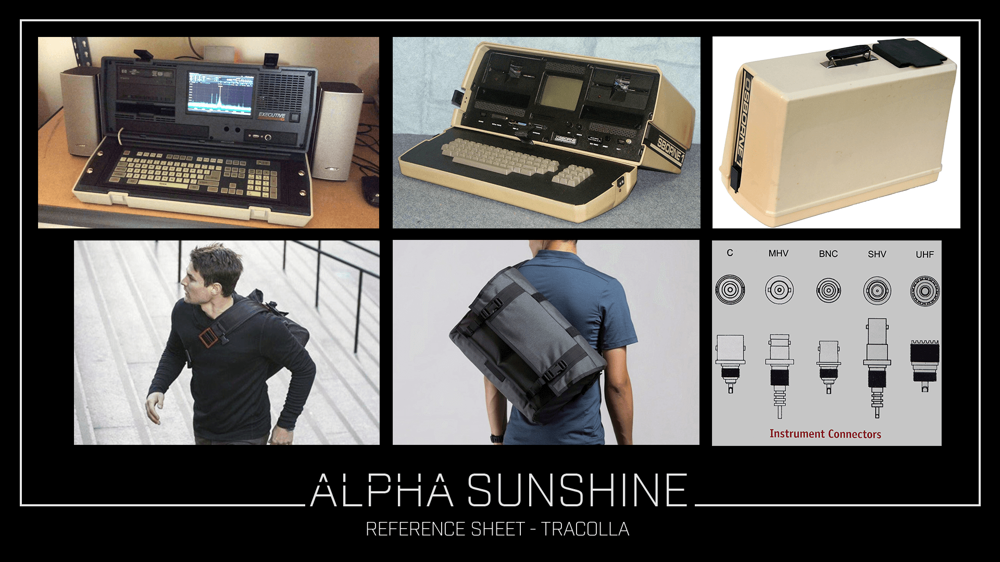

La prima fase è stata dedicata alla raccolta di reference a cui ispirarci. Da subito abbiamo ristretto il campo di ricerca ad un’ambientazione tra la fantascienza e il post-apocalittico, avendo ben in mente di voler rappresentare uno scontro tra personaggi che avessero una grande disparità di grandezza, così da poter mettere in scena il tipico conflitto “Davide contro Golia”. Le immagini raccolte sintetizzano le possibili scelte estetiche riguardanti i due personaggi, il terminale e il tipo di ambientazione a cui ci siamo ispirati.
   